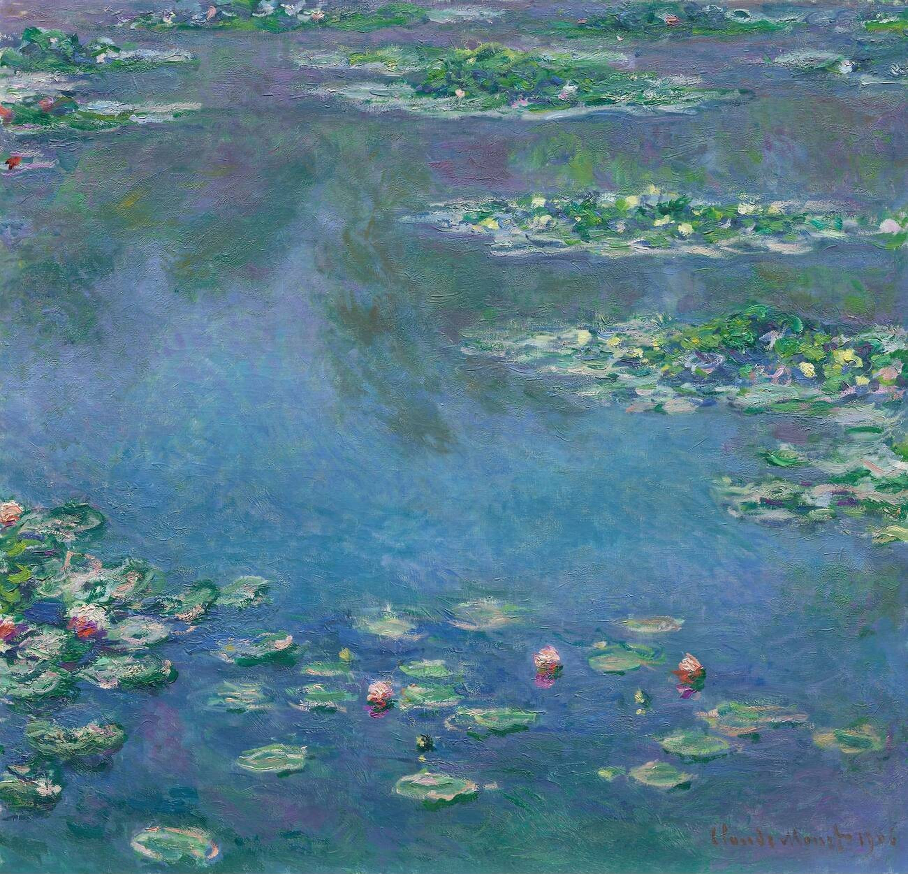
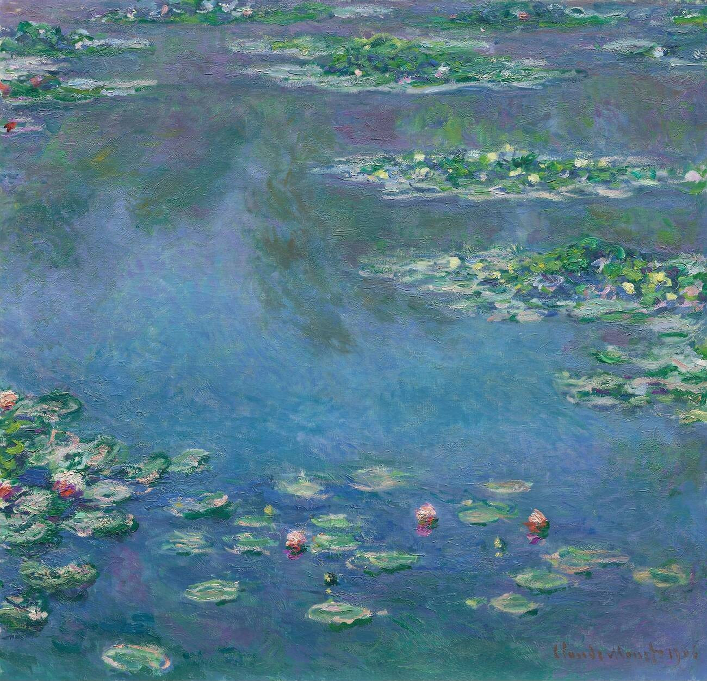
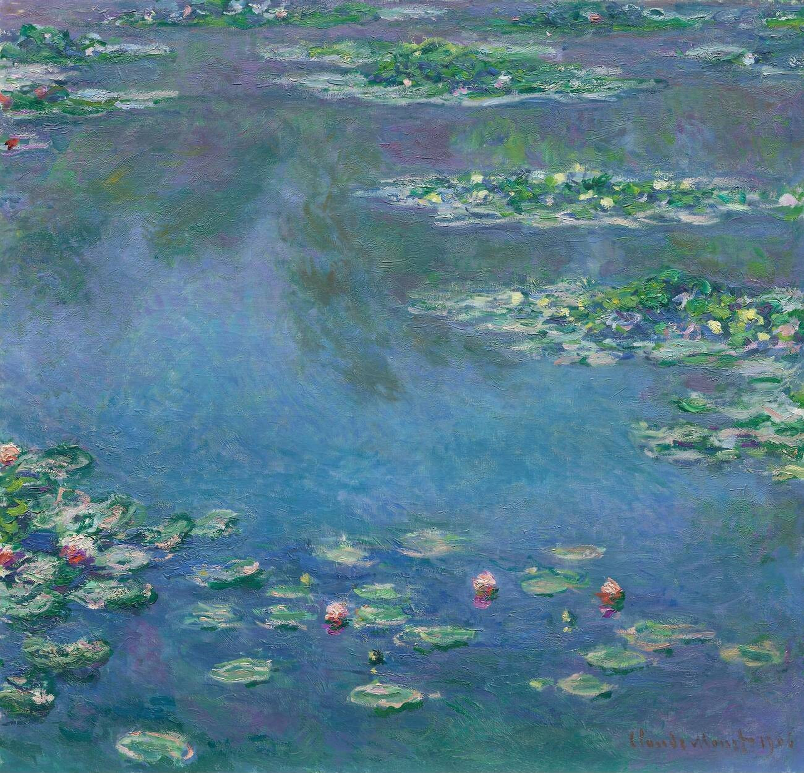
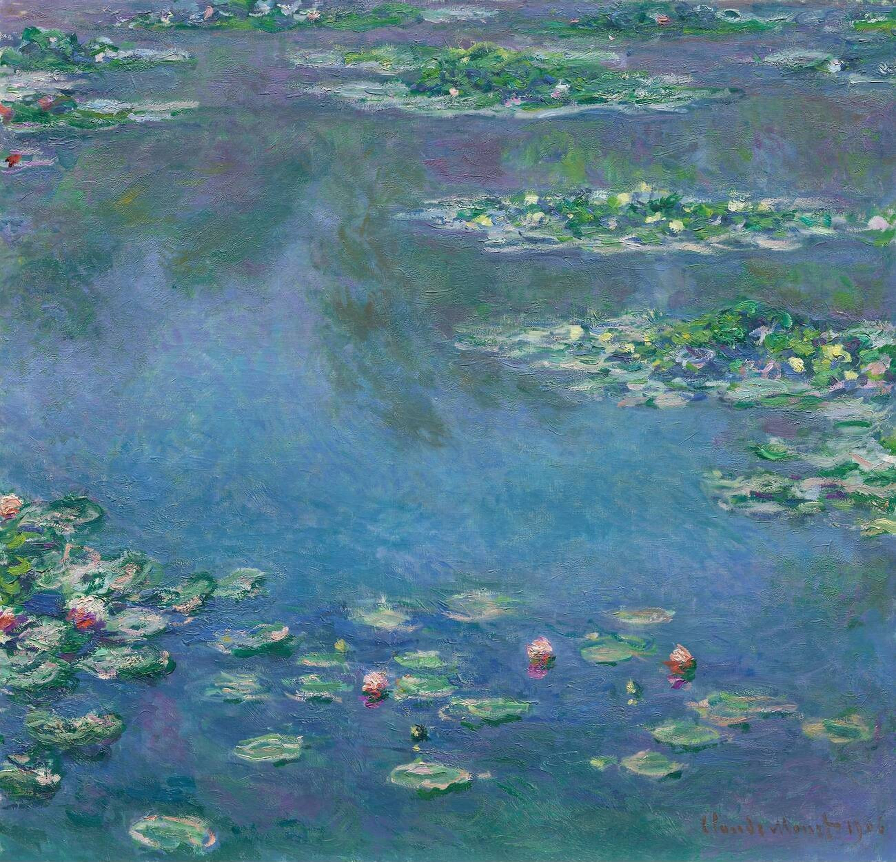

Claude Monet, uno dei principali esponenti dell'Impressionismo, ha dedicato una parte significativa della sua carriera alle ninfee, dipingendole nel giardino della sua casa a Giverny. Questi fiori acquatici sono diventati uno dei soggetti più iconici del suo lavoro, rappresentando una sintesi perfetta del suo approccio artistico e del suo desiderio di catturare la luce e il colore in continua mutazione.
Le ninfee di Monet non sono semplicemente rappresentazioni botaniche; sono piuttosto riflessioni sulla percezione e l'esperienza visiva. Monet ha esplorato le variazioni di luce e atmosfera, dipingendo lo stagno delle ninfee in diverse ore del giorno e sotto diverse condizioni atmosferiche. Questo ha permesso di creare una serie di opere che, pur condividendo lo stesso soggetto, offrono una vasta gamma di emozioni e impressioni.
Per Monet, le ninfee rappresentavano anche un rifugio spirituale e un punto di connessione con la natura. Dopo la morte della sua seconda moglie, Alice, e con l'aggravarsi della sua vista a causa della cataratta, il giardino di Giverny e le sue ninfee divennero una fonte di conforto e ispirazione. Le sue tele finali, con pennellate sempre più fluide e astratte, riflettono una profonda introspezione e un'attenzione crescente verso l'essenza della natura e la bellezza effimera del momento presente.